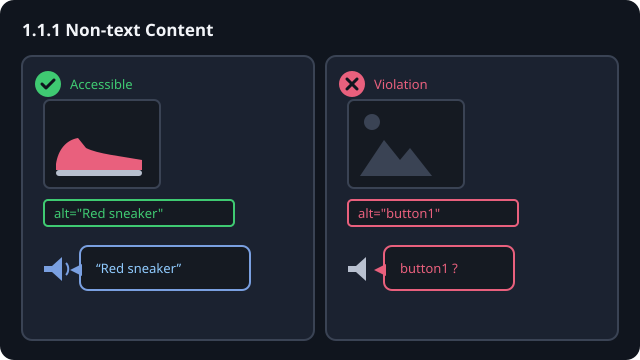

Turn on a screen reader — like VoiceOver — and move through the page. Does every image announce something useful?
Open dev tools on the image and check alt="…". What does it really say?
alt="…"
alt=""